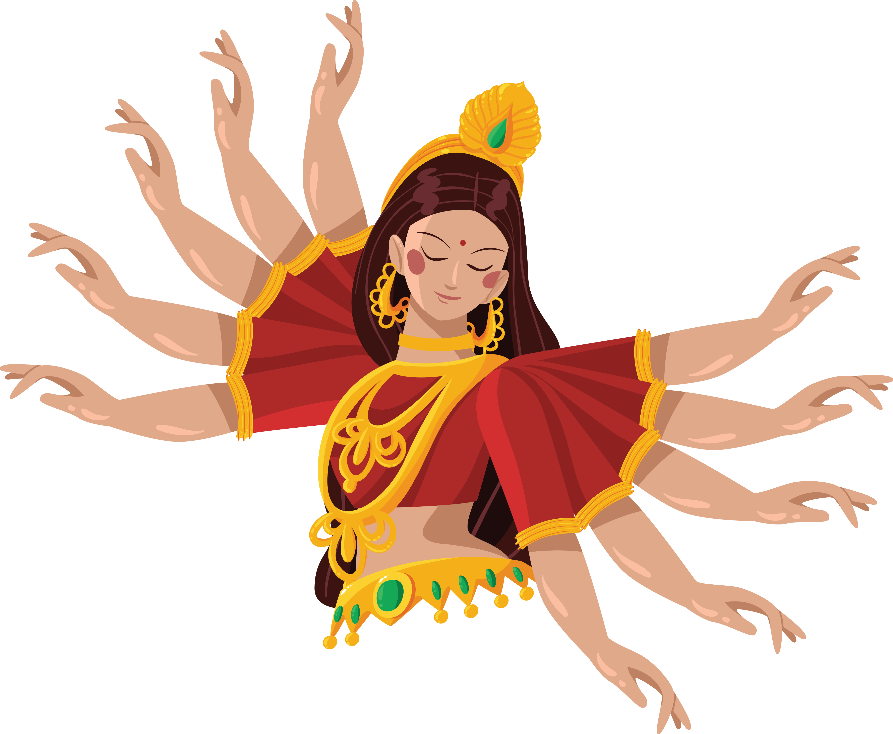

Durga, a hindu mitológiában az egyik legnagyobb tiszteletnek örvendő istennő, aki az erő, a védelem és a győzelem megtestesítője. Nevét a „durg” szóból eredeztetik, ami azt jelenti, hogy „erőd” vagy „legyőzhetetlen”. Ő az, aki a káoszt és a gonoszt legyőzve harmóniát és rendet teremt a világban. Durga a női erő (sakti) legfelsőbb megtestesítője, aki egyszerre védelmező anya és könyörtelen harcos.
Ünnepe, a Navaratri, Indiában és világszerte nagy tiszteletnek örvend, kilenc napos fesztivál, amely során az emberek imádkozással, tánccal és énekekkel ünneplik az istennőt. Durga példája arra emlékeztet, hogy a belső erő és a kitartás segít minden akadály leküzdésében. Azért az ő neve után találtuk ki nem csak csapatunk nevét hanem logóját is, mivel szeretnénk ha csapatunk morálja az ő jellemzőihez hasonló lenne. Őt, legtöbb esetben, sok karral ábrázoljak, ami számunkra azt szimbolizálja, hogy bár közösen és közös célért dolgozunk, de mindenki mást ad hozzá.